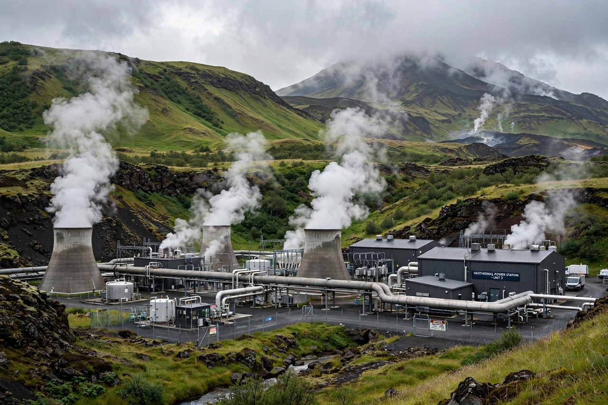

Geothermal energy

Geothermal energy is heat from within the Earth — left over from the planet's formation and continually generated by radioactive decay in the {L('Mantle_(geology)','mantle')} and crust. Where hot water or steam reaches accessible depths, it can drive turbines for electricity or be used directly for heating.
Geothermal power is small globally but locally decisive: it supplies roughly a quarter or more of Iceland's electricity and most of its heating, and leads the generation mix in parts of Kenya, New Zealand, the Philippines and El Salvador.
Electricity generation
Conventional plants tap hydrothermal reservoirs along plate boundaries and hotspots, where fractured rock holds water at 150–350 °C. Dry-steam plants (Larderello in Italy, The Geysers in California) use steam directly; flash and binary plants handle progressively cooler resources, binary technology allowing power from water below 100 °C in favourable cases.
Enhanced geothermal systems (EGS) aim to manufacture reservoirs in hot dry rock anywhere by drilling and fracturing, which would vastly expand the resource; pilot projects in several countries are testing whether costs and induced seismicity can be managed.
Direct use and heat pumps
Warm water is used directly for district heating, greenhouses, aquaculture, bathing (from Roman baths to Japanese onsen) and industrial drying. Separately, ground-source heat pumps exploit the ground's stable shallow temperature to heat and cool buildings efficiently almost anywhere, and are by far the largest geothermal application by installed capacity.
Geothermal plants run around the clock with small land footprints and low emissions, complementing variable Wind power and Solar power. See Renewable energy.
See also: Renewable energy · Energy · Plate tectonics · Hotspot (geology) · Electricity